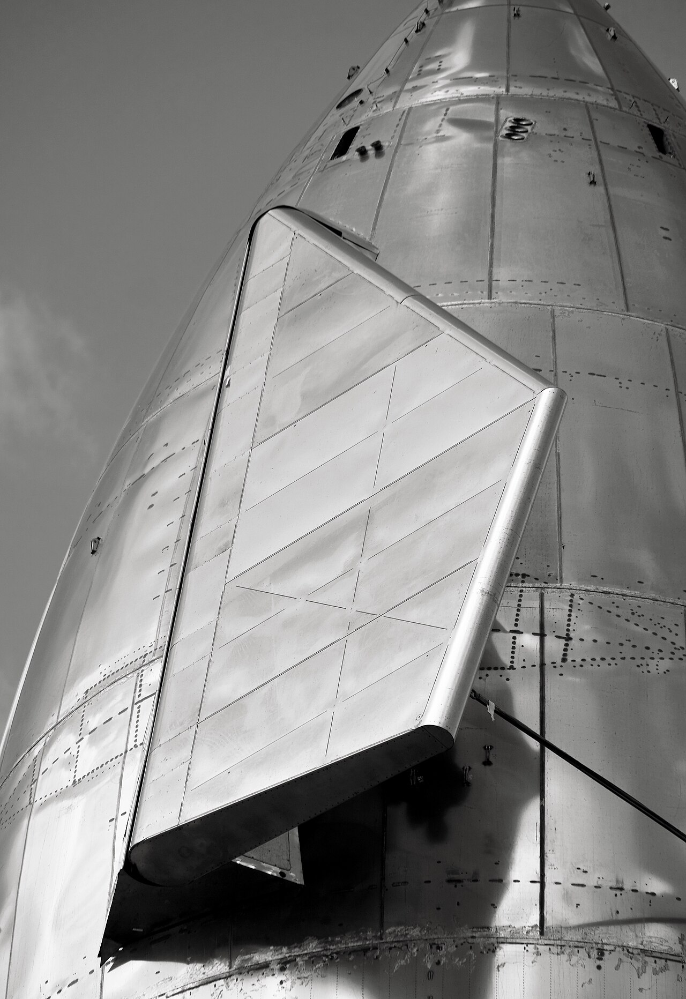

Dimostrato
Cattura del booster e risultati di rientro documentati per ciascun volo.
Operazioni · Scheda tecnica 30
La cattura del booster e il ritorno della nave sono due problemi diversi. Il riuso completo richiede che entrambi tornino in condizioni adatte a una nuova missione.
Stato al 10 ottobre 2026: Sperimentale
Leggi i dati Controlla le fonti
Riferimento: documenti citati a fondo pagina, letti con le rispettive date. Stato editoriale al 10 ottobre 2026.
Il booster torna dopo una traiettoria diversa da quella della nave. La torre deve essere pronta a riceverlo, mentre Ship affronta riscaldamento e controllo atmosferico. Un successo di uno stadio non dimostra il risultato dell’altro.
Le campagne hanno aggiunto ammaraggi controllati, catture e nuove configurazioni. Il registro dei voli conserva gli esiti separati di booster e nave invece di assegnare un unico successo a ogni tentativo.
Un veicolo recuperato dopo un ammaraggio può richiedere lavorazioni molto diverse da uno catturato. Tempi, integrità e costo del ricondizionamento sono parte della verifica del riuso; recuperare un relitto o una nave non dimostra un rivolo.
Cattura del booster e risultati di rientro documentati per ciascun volo.
Riuso rapido di entrambi gli stadi come obiettivo del sistema.
Ciclo regolare completo: recupero, manutenzione, rilancio e costo.

Consultazione editoriale: 10 ottobre 2026. Le date dei singoli documenti sono distinte dalla data della scheda.
.jpg){kind=link}